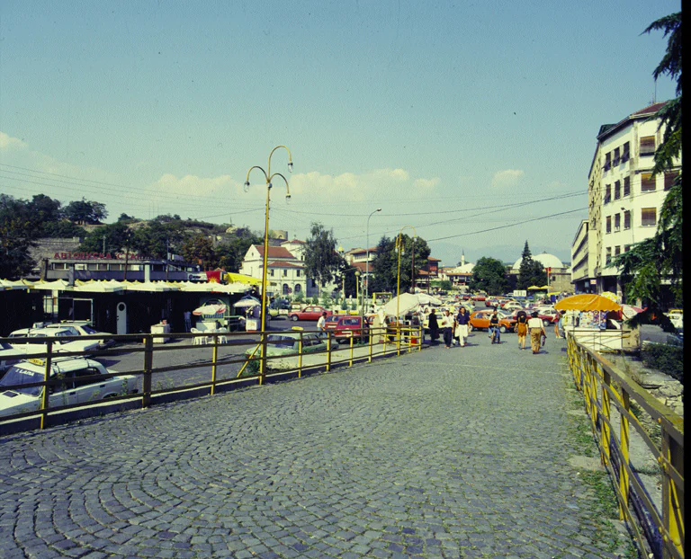
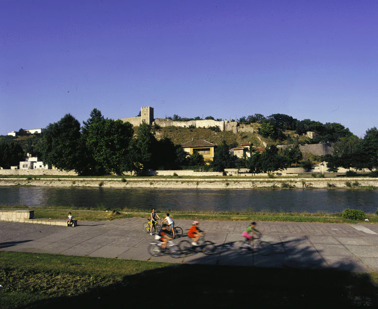
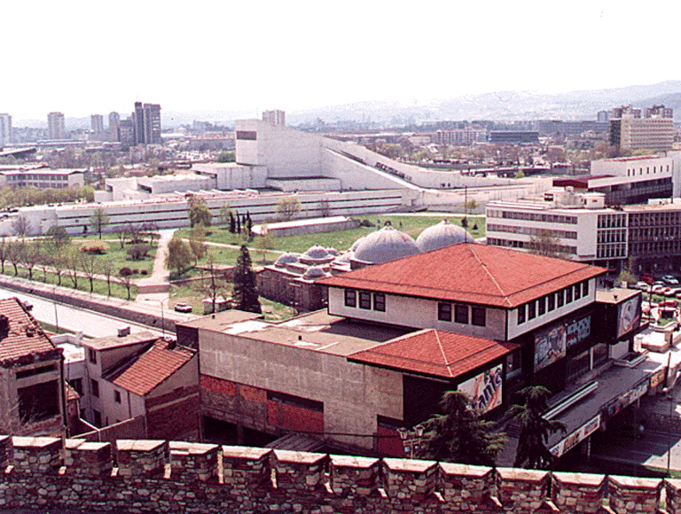
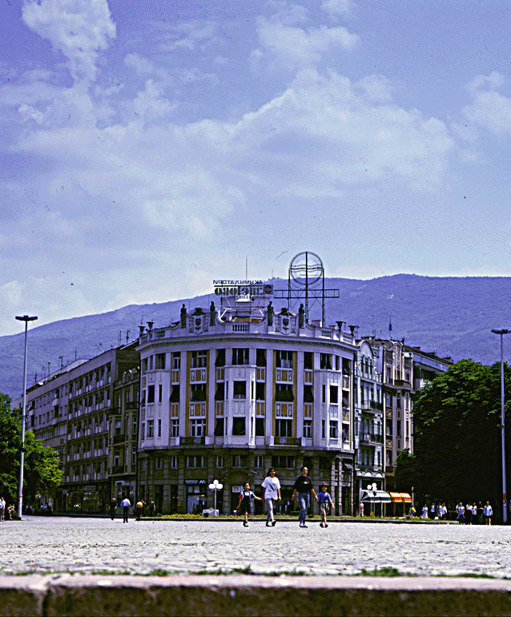
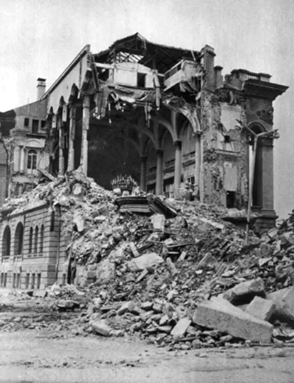

Хамам Даут-паши
- Производство
- УФУЖ и Документальное кино Прага
- Сценарий и режиссура
- Славко Яневски и EMAN CANERA
- Год
- 1959
- Продолжительность
- 00:08

Кафедральный собор «Св. Климент Охридский». 12 августа 1990 года состоялось торжественное освящение кафедрального собора «Св. Климент Охридский» в присутствии многочисленного высшего духовенства во главе с архиепископом господином Гавриилом. На торжестве присутствовали около 80 тысяч жителей Скопье, других городов Македонии и македонцев из диаспоры (Австралия, Канада, США и ряд стран Европы).



Вид с каменного моста на старую часть города.

Набережная на правом берегу реки Вардар.

Скопская крепость - Кале и река Вардар.

Закат над старым каменным мостом.


Панорамный вид на центральную часть Скопье со Скопской крепости - Кале.

Панорамный вид на Скопье. В центре - скопский театр.

Дворец Ристича и площадь.

Часть улицы «Македония» в сторону площади.


Торговый центр «Мавровка»

Часть центра Скопье - «Арабский дом».

Здание газеты «Нова Македония».

Торговый центр «Буняковец».

Старые ремёсла в Скопье всё ещё живы. На снимке мастерская, где делают хозяйственную утварь. Способ изготовления почти тот же, что и сотни лет назад.

Часть хамама Даут-паши и здание Македонского радио и телевидения на заднем плане.

Часть старой скопской чаршии.

Панорама Скопье на северо-запад.

Ночная панорама Скопье на северо-запад.

Вид на Скопье с горы Водно.

Панорама центрального городского района со Скопской крепости - Кале.


Памятник Матери Терезе, установленный 5 сентября 1998 года.

 Акведук4 открытки
Акведук4 открытки Кале30 открыток
Кале30 открыток Мосты60 открыток
Мосты60 открыток Набережная58 открыток
Набережная58 открыток Площадь46 открыток
Площадь46 открыток Здания66 открыток
Здания66 открыток Христианские храмы19 открыток
Христианские храмы19 открыток Мусульманские здания33 открытки
Мусульманские здания33 открытки Офицерский дом29 открыток
Офицерский дом29 открыток Театр28 открыток
Театр28 открыток Железнодорожный вокзал13 открыток
Железнодорожный вокзал13 открыток Школы36 открыток
Школы36 открыток Парки12 открыток
Парки12 открыток Рынки18 открыток
Рынки18 открыток Улицы38 открыток
Улицы38 открыток Панорама I60 открыток
Панорама I60 открыток Панорама II30 открыток
Панорама II30 открыток Коллажи55 открыток
Коллажи55 открыток Наводнения9 открыток
Наводнения9 открыток
Землетрясение27 открыток Скопье 200026 открыток
Скопье 200026 открыток